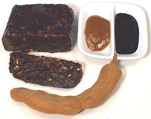
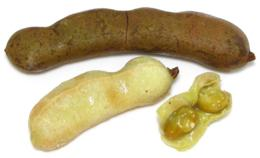
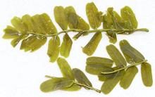
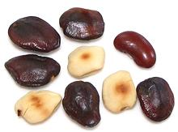
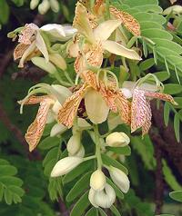
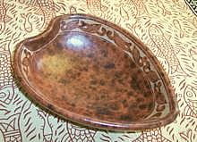

Tamarind

[Indian Date; Tamarindo
(spanish); Asam (malay), Asem Jawa (Indonesia); Imli, Amli, Chinch
(India); Ma-kahm (Thai); Me (Viet); Puli (Tamil, Malay);
Tamarindus indica]
Native to tropical Africa and Madagascar, the tamarind tree was known
to the ancient Egyptians, and taken to India so long ago even botanists
thought it was native there. From India it was introduced to Persia and the
Arab world, thus Arabic "tamar hindi" (Indian date). It is now planted
throughout the tropics and sub-tropics including Mexico, Central America,
the Caribbean and southern Florida.
This hardwood tree can grow to around 70 feet but is in fact a legume,
related to the common green bean and pea. The sweet/sour fruit pulp
surrounding the seeds within the thin brittle shell are the part most used,
but leaf shoots and flowers are also used. Tamarind fruit pulp is an
important flavoring for food and beverages worldwide.and is an important
ingredient in Worcestershire sauce, HP Sauce (UK and Canada) and Jamaican
Pickapeppa sauce.
Tamarind pulp is widely sold in several forms, as illustrated in the photo
above:
- Whole Pods: These are found piled in bins (mostly broken) in
markets serving Hispanic communities, and carefully packed in windowed
gift boxes for sale in Asian communities. This is the least convenient
form as you must pick off the fragile shell before using. Otherwise
prepare the same as for the block form but use a bit more to compensate
for the seeds.
- Pressed Block: This is the most common form - pulp with
the shell and most of the seeds removed. Thailand is the most common
exporter but also India and other tropical countries.
- Concentrate (Regular Paste): Widely available and the
most convenient form - you need only spoon it out of a jar. A tablespoon
of this paste is roughly equivalent to 1-1/2 tablespoon of block after
it is soaked and straining as described below. Thailand exports a number
of brands, often labeled in incomprehensible Thai script and in Vietnamese
as Nuöc Me Chua. They vary in quality (some have tiny bits
of shell in them but this doesn't seem to bother most recipes). Some
brands are "Product of U.S.A.", but read the label - some contain
an uncertain amount of "High Fructose Corn Syrup".
- Concentrate (Black): This seems to comes only from
India. The most common brand in the US is Tamicon, but there are others.
It is highly concentrated and clearly has been cooked down, giving it a
bit of a molasses flavor. You'd need to dilute it with 2 parts water to
1 part concentrate to get it about where the regular paste is, but the
flavor will still be different.
Measures Most Indian recipes call
for pulp from blocks. Measures are usually by volume, sometimes
tablespoons, but more often "the size of a golf ball", "the size of
a lime" or "the size of a Gooseberry. Caution: limes in India
(and most of the world) are what we call "Key Limes" here in North
America. They are much smaller than our common Persian / Tahitian
limes, and Indian Gooseberries are much larger than what we call a
gooseberry in North America.
- Lime: Key Lime size, about 1.4 inches diameter,
1-1/8 ounce (32 grams) and fill 1-1/2 Tablespoons (International
tablespoons, not Australian).
- Lemon: Lemons like our big yellow ones are not native
to India, where the words "lemon" and "lime" are used interchangeably.
What botanical lemons they do have are mostly small and green. I have
not been able to find an exact size, but lets go with around 1-1/2
inches, 1-1/3 ounces (38 grams) and 2 Tablespoons.
- Gooseberry: Indian gooseberries get up to about
2 inches diameter, but average about 1-5/8 inches diameter, which
would be 1-3/4 ounces (50gms), which would be just over 2-3/4
Tablespoons.
- Golf Ball: This size would be 1.7 inches diameter,
weigh 2 ounces (57 grams) and fill 3 Tablespoons.
Using Block Form
Is block better than concentrate? Yes, noticeably more tart and
flavorful, nearly identical to fresh pods but easier to use because
you don't have to pick off the shell and deal with the seeds. The result
is much thinner than concentrate, but remarkably strong.
- Lime size: Take 1 ounce (30 grams, 1-1/2 Tablespoon),
chop coarsely and place in a 1 cup measuring cup. Fill with almost
boiling water to 2/3 cup. Let soak for 20 to 30 minutes, stirring
occasionally. It is ready when all the sticky black paste is dissolved
leaving the white seed surround and fibers. Golf Ball size:
Take 1-7/8 ounces (55 grams 2-7/8 Tablespoons) and do as above
but fill to a full 1 cup.
- Strain, preferably through a nylon strainer due to the acidity,
pushing the pulp around and pressing with a wooden spoon. Be sure to
scrape the outside of the strainer as much paste will adhere there.
- Lime size will yield about 1/2 cup - the equivalent to about 5
tablespoons of regular concentrate. Golf ball size will yield
about 3/4 cup, equivalent to about 7-1/2 tablespoons of concentrate.
- Refrigerate what you don't use right away - it'll keep a week or
so.
Young Pods:
- [Sampalok (Philippine)]

Immature pods are used in India to flavor rice. In the Bahamas green
pods are roasted in ashes until they burst, then are dipped in the ashes
and eaten. Immature pods are not much available in North America because
the trees are unlikely to fruit here except at the southern tip of
Florida. Mexico grows plenty, but does not ship immature ones north
of the border.
The photo specimens were purchased frozen from a Philippine market
in Los Angeles, labeled Green Tamarind Fruit. These were fairly mature,
the shells already nearly brittle, but the flesh was green and seeds
quite soft. The flesh was quite tart, with a sweet-tart balance similar
to lemon. The seeds could be easily chewed, but you don't want to do
that. They were very bitter and astringent. The best way to peel these is
right out of the freezer compartment. Leave them in a bowl of hot water
for about 1 minute so the shell is softened but the flesh is still firmly
frozen. Thawed, the flesh can be eaten after pulling the fibers out
by the stem, or it can be squeezed for juice.
Leaves

In India and Africa, tender leaf shoots are used as greens and in
soup. They can be purchased in jars packed in brine in some markets
serving Asian communities. These have a very light sweet-sour taste.
The hard stems must be removed, which is a hassle because they are in
little pieces, and the leaves don't strip off easily - not really
worthwhile in my opinion. If I lived in a growing region where I could
get them fresh, I might think differently. The stems in the photo carried
very thin leaves 0.3 inches wide and 0.7 inch long. Tamarind leaf, water,
salt, citric acid, sodium benzoate (preservative) sodium metabisulfate
(color preservative).
Seeds
- [kachika (Gujarat); Imli Beej (Hindi)]

In the growing regions Tamarind seeds are roasted and eaten as a snack,
as well as being ground to flour for use as a thickener. Despite being
very nutritious with plenty of antioxidants and such, they currently have
little use outside the growing regions. A process is being developed
to use them to produce a substance similar to, but said to be superior to,
fruit pectin for making jams and jellies.
As harvested from the dried pods sold here in North America, the
seeds are extremely hard and can withstand even a sharp hit with a
tack hammer. After roasting on a cast iron comal at 500°F/260°C
the outer shells are brittle enough to crack with a tack hammer and
pry off. The kernels are still very hard. In the growing regions,
children eat the roasted seeds like very hard candy, working on them
for a while. They can eat fresh seeds from ripening pods more easily
but those need to be roasted too as they are bitter and astringent
raw. Roasted, the flavor is similar but not identical to roasted
peanuts. I have seen them listed in an "alternate" recipe for Nigerian
Banga Soup Spice (a recipe calling for ingredients you can actually get).
Flowers:

In India, flowers are used in salads and are made into a pickle in
southwest India.
Photo by Tau'olunga distributed under license
Creative Commons
Attribution-ShareAlike v3.0 Unported.
Non Culinary Uses

In Indonesia, tamarind pulp is rubbed into pottery before firing to
produce a unique mottled reddish brown glaze.
bp_tamaz 080914 - www.clovegarden.com
©Andrew Grygus - agryg@clovegarden.com - Photos on this
page not otherwise credited are © cg1 -
Linking to and non-commercial use of this page permitted